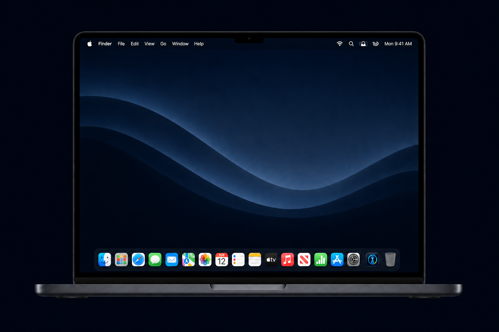

Native utility for macOS
Your AI usage.
Always in sight.
UsageBeacon turns Cursor and Claude usage into one calm signal—right on your Mac.

One live snapshot
Three surfaces. One live snapshot.
Choose the view that fits your workflow. Every surface stays in sync, so the number you need is always close.
How it works
From scattered dashboards
to one calm signal.
UsageBeacon reads the usage information you already have access to, turns it into a clear budget snapshot, and keeps that snapshot visible across macOS.
-
01
Connect a source
Sign in to Cursor or Claude, use an admin key, enter a manual budget, or map a custom REST endpoint.
-
02
Choose what matters
Track remaining budget, spend today, quota utilization, and a calendar-aware daily runway.
-
03
Put it where you look
Use the menu bar, Notification Center widget, desktop widget, or floating HUD—without reopening a provider dashboard.
MONTHLY BUDGET LEFT
Understand the number
Not just spend.
Useful context.
UsageBeacon translates provider data into the questions you actually ask during the month.
- How much is left?
- See remaining dollars or quota at a glance.
- How fast can I spend?
- Divide the remaining budget across your actual working days.
- What changed today?
- Keep today’s spend and the latest prompt cost close.
Local-first by design
Your credentials stay on your Mac.
Secrets live in macOS Keychain. UsageBeacon talks directly to your configured sources and does not require a UsageBeacon account, analytics service, or cloud backend.
Read the privacy details →Install in a minute
A normal Mac app.
No setup maze.
Signed with a Developer ID certificate and notarized by Apple. Download the DMG, move UsageBeacon to Applications, and choose your surfaces.
- 1Download
Get the latest signed DMG.
- 2Install
Drag UsageBeacon into Applications.
- 3Connect
Add Cursor, Claude, or another source.
- 4Glance
Choose menu bar, widgets, or HUD.
Ready when you are
Keep the useful number close.
Free, open source, and built for macOS.
Download for Mac